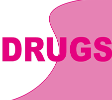

Piep in je oor na een festival? Je vrienden niet goed kunnen verstaan, of na het feest nog de beat horen in je bed? De nadelen van je favoriete muziek live horen. Helaas hebben wij er allemaal welleens last van, maar wat kunnen wij er aan doen om de side-effects te verminderen?
Afleveringen

Drugs lijken steeds normaler te worden, voornamelijk op festivals. Wat zijn eigenlijk de gevaren van drugs en hoe voorkom je gevaarlijke situaties? Dat en meer wordt besproken in de aflevering over drugs.
Wijnen, Wijnen, Wijnen hoor je de Meilandjes al gieren! In een maatschappij waar vele vragen om "een drankje doen." Doet een alcoholische versnappering nou eigenlijk met je en is het verstandig tijdens een festival of feest?